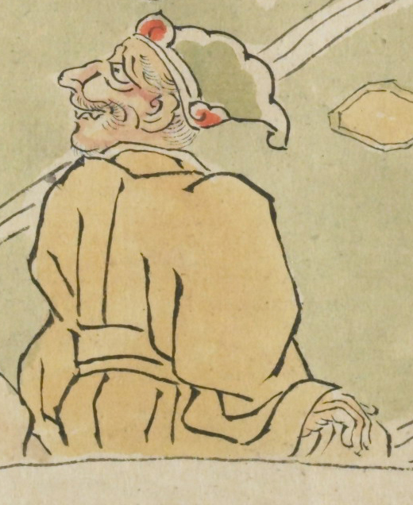

鳥兜のような冠をかぶった鬼。赤い顔で口を閉じている。口もとからは小さな牙も見えている。黄色い羽織を身につけている。
出典：親書誌：U426_nichibunken_0079：酒天童子絵巻；シュテンドウジエマキ／日付：2006／資源識別子：U426_nichibunken_0079_0005_0001
Copyright (c)2010- International Research Center for Japanese Studies, Kyoto, Japan. All rights reserved.